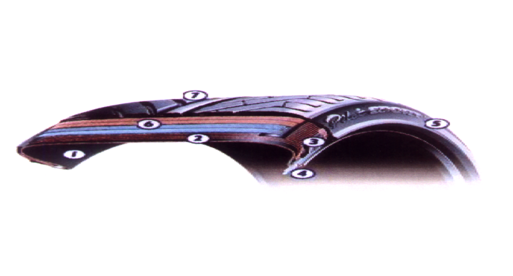

A Composite Product
A tyre is a composite product, i.e., a high-precision elaborately assembly of materials that has widely differing properties.
The main sub-assemblies making up the tyre are as follows:

- An innermost stet of airtight synthetic rubber, which performs the “inner tube” function.
- The carcass ply, made up of thin textile fiber cables, laid out in straight lines and bonded into the rubber. These cables are largely responsible for determining the strength of the tyre structure. The carcass ply of a car tyre has about 1,400 cables, each able to withstand 15kg.
- Lower filler, which is responsible for transferring propulsion and braking torques from the wheel rim to the road surface contact area.
- Beads, which clamp the tyre firmly against the wheel rim. the bead, can withstand forces up to 1,800 kg’s.
- Supple rubber walls, which protect the tyre against impacts (with kerbs etc) that might otherwise damage the carcass. There is also a hard rubber link between the tyre and the rim.
- Crown plies, consisting of oblique overlapping layers of rubber reinforced with very thin but very strong metal wires. The overlap between these wires and the carcass cables form a series of non-deformable triangles, an arrangement that lends great rigidity to the tyre structure. These plies, which cover the whole of the tyre crown, perform a very complex function. First, they provide sufficient circumferential rigidity to prevent elongation under the effect of centrifugal force, and thus ensure a constant tyre diameter under all conditions. Then they must provide, lateral rigidity, to resist sway effects. But they must also be supple in the vertical direction to “drink up” obstacles. To make the crown plies, the metal wires must be firmly bonded onto the rubber. Perfect bonding between these two highly dissimilar materials is difficult to achieve but nonetheless essential.
- The tread, which is bonded onto the crown plies then sculpted with the special tread pattern. Since this is the part of the tyre that comes into contact with the road surface, it must be able to withstand very high forces, and it must be able to grip dry and wet road surfaces. In addition, it must resist wear and abrasion, and it must not overheat. Once the tread has been fitted and sculpted, the whole assembly is vulcanized for maximum solidity.